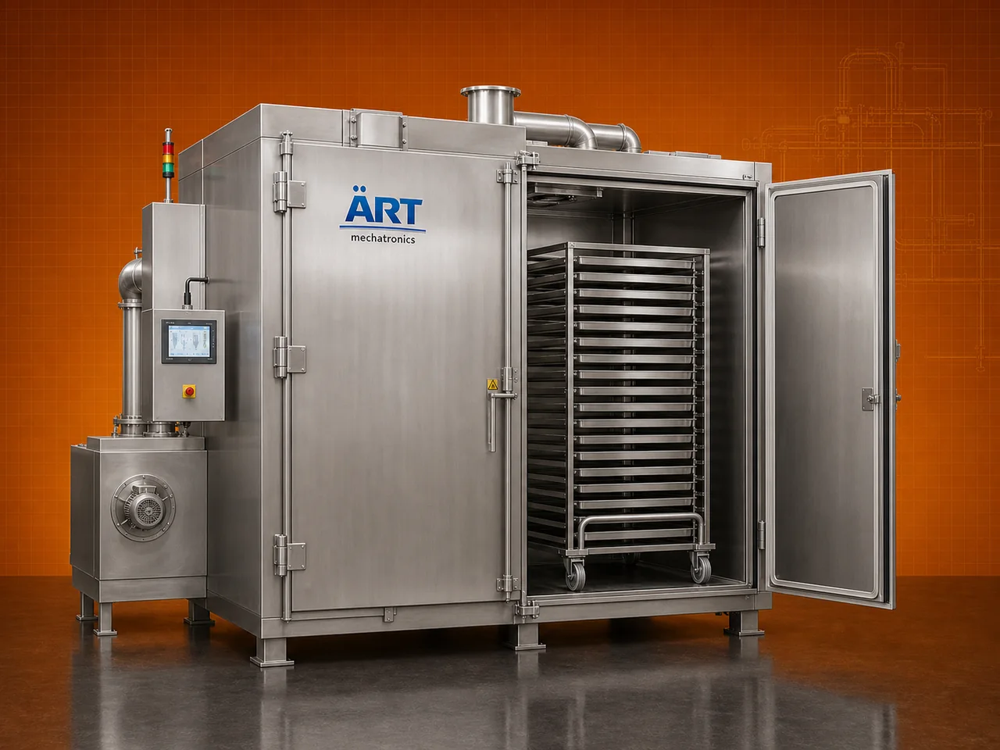

Tray Dryer / Tray Oven Machine (Industrial Hot Air Batch Drying System)
A Tray Dryer Machine, also known as a Tray Oven or Hot Air Tray Dryer, is a highly efficient batch drying system designed for uniform drying of materials using controlled hot air circulation inside enclosed chambers with multiple trays.

About the Tray Dryer, Tray Oven
Tray dryers are widely used in industries such as pharmaceuticals, food processing, chemicals, nutraceuticals, agro processing, and cosmetics, where controlled drying, consistent quality, and product safety are essential.
The system ensures even heat distribution across all trays, resulting in uniform moisture removal, better product quality, and reliable drying performance.
ART Mechatronics offers high-performance tray dryer machines, engineered for precision drying, energy efficiency, and long-lasting industrial operation.
One machine, many names
Buyers search for this equipment under many terms — we manufacture all of them:
Working Principle of Tray Dryer
Ensures even drying
Types of Tray Dryers
Industries Using Tray Dryer
💊 Pharmaceutical Industry
- Tablets, granules
🍃 Food Processing Industry
- Fruits, vegetables, powders
⚗️ Chemical Industry
- Chemicals
- Powders
🌿 Nutraceutical Industry
- Health supplements
🌾 Agro Processing Industry
- Seeds, grains
💄 Cosmetic Industry
- Powders and materials
Features & Advantages
- Uniform drying across all trays
- Controlled temperature and airflow
- Suitable for wide range of materials
- Batch-wise quality control
- Energy-efficient operation
- Easy operation and maintenance
- Hygienic and safe design
Technical Highlights
- Capacity: Number of trays (customizable)
- Drying Type: Hot air batch drying
- Heating Source: Electric / Steam / Gas
- Construction: Mild Steel / Stainless Steel
- Temperature Control: Precise control system
- Airflow System: Blower-based
Turnkey Tray Dryer Solutions
ART Mechatronics offers:
- Complete drying system design
- Heating and airflow optimization
- GMP-compliant designs (for pharma)
- Installation & commissioning
- After-sales service & AMC
Why Choose Art Mechatronics
- Expertise in industrial drying systems
- Customized solutions for various industries
- High-performance and durable machines
- Energy-efficient designs
- Proven performance across applications
Applications
- Pharmaceutical Manufacturing Units
- Food Processing Plants
- Chemical Processing Units
- Nutraceutical Plants
- Agro Processing Units
Industries that use the Tray Dryer, Tray Oven
Get pricing & specs for the Tray Dryer, Tray Oven
Share the product, target capacity, current process and plant location. These details help our engineers discuss the right machine or line configuration.
One partner, from design to start-up
ART Mechatronics designs, manufactures, installs and commissions your Tray Dryer, Tray Oven solution with regional presence in India, UAE and Thailand.